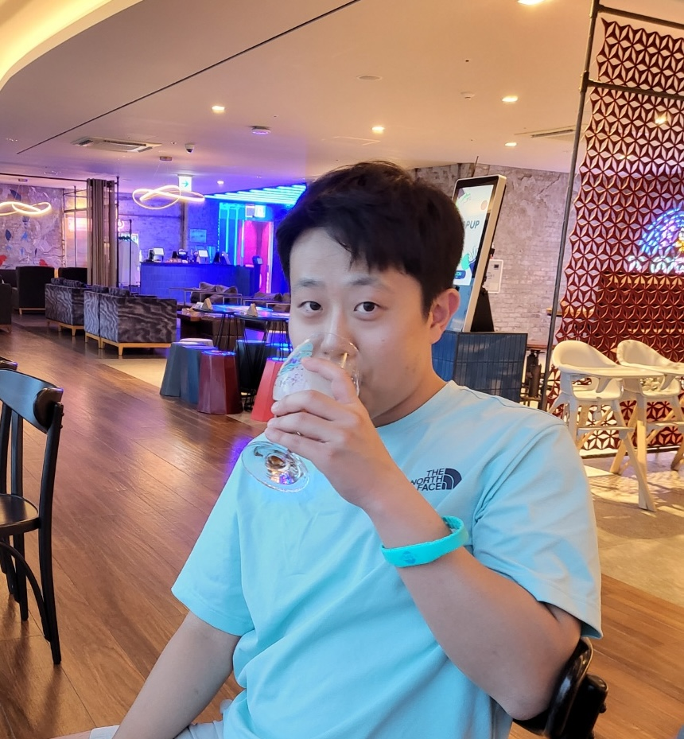

Regulatory genomics
Understanding how biological sequences shape gene regulation and cellular function.
AI × Genomics
PhD Student at Cold Spring Harbor Laboratory

I am a PhD student at Cold Spring Harbor Laboratory, advised by Prof. Peter Koo. I develop AI methods that move beyond black-box prediction to uncover interpretable, mechanistic insights from genomic data.
My research spans regulatory genomics, genomic foundation models, model robustness, and evidence-grounded evaluation—with an emphasis on generating testable biological hypotheses.
Research focus
I am interested in models that are not only accurate, but also scientifically useful, robust, and grounded in biological evidence.
Understanding how biological sequences shape gene regulation and cellular function.
Building and studying general-purpose representations of genomic and transcriptomic data.
Making model behavior reliable, transparent, and useful under real biological variation.
Evaluating whether model insights are supported by evidence and lead to testable hypotheses.
Updates
Leveraging Biokinetic Knowledge Priors for Data-Scarce Bioprocess Modeling was accepted to the ICML 2026 AI for Science Workshop.
Assessing Patent Value with LLMs: DRAM Dataset was accepted to PACIS 2025.
Predictive Pipelined Decoding was accepted to TMLR.
Towards the Practical Utility of Federated Learning in the Medical Domain was accepted to CHIL 2023.
Joined KRAFTON AI as an NLP Research Engineer.
Background
Before starting my PhD, I lived a little like a greedy search algorithm: at each step, I followed the most interesting question in front of me.
From December 2025 to May 2026, I worked at Gruve AI, a U.S.-based AI company, where I developed AI agents in collaboration with a genetic testing company.
Before Gruve AI, I was an NLP Research Engineer at KRAFTON AI, where I worked on LLM post-training, efficient inference, and language-model applications for games.
I received my M.S. from the Graduate School of AI at KAIST, advised by Prof. Edward Choi. My work explored trustworthy machine learning across healthcare, distribution shifts, and natural language processing.
I earned my B.S. in Computer Science from Yonsei University, where I first became interested in extracting useful structure from language and complex data.